第 10 回 テスト¶
所要時間の目安: 4 時間 / 前提: 第 1〜9 回 (特に第 3・7・9 回)
この回のゴール¶
テストの 種類 (単体・コマンド・実ビルド・生成物・構造・回帰) と、それぞれの役目を説明できる。
pytestの基本 (assert・フィクスチャ・parametrize・tmp_path・monkeypatch) を使える。偽物 (偽のコマンド・偽の環境・関数の差し替え) の作り方を、使い分けられる。
変異テスト (テストのテスト) を、手作業でできる。
構造テスト (依存の向き・生成物のずれ) の考え方を、説明できる。
不備を見つけたとき、再現 → 失敗するテスト → 修正 → 効くか確認 の手順で、回帰テストを足せる。
1. なぜテストを書くのか¶
ここまでの講義で、レビューで見つかった不備 が、何度も出てきました。
不備 |
もし、テストが無かったら |
|---|---|
存在しないパスを、「100%」と報告する |
打ち間違いで、検査が黙って空 になる。誰も気付かない |
増分ビルドが、公開の方針を素通りする |
図の無いページで、Confluence を 置き換える |
Sphinx が無い環境で、CLI 全体が起動しない |
利用者が、最初のコマンドで、つまずく |
テストは、「いま動いている」ことの確認 ではなく、「将来、壊したときに、気付ける」ための仕組みです。 人は、変更のたびに、全部を見直せません。機械に、見張らせます。
2. テストの種類¶

種類 |
ファイル (例) |
確かめること |
|---|---|---|
単体 |
|
純粋な関数。数を多く 書く |
コマンド |
|
引数 → 終了コード・出力。外のプロセスは 偽物 |
実ビルド |
|
Sphinx を 本当に 動かす。主要な経路だけ |
生成物 |
|
生成物が、元と ずれていない |
構造 |
|
依存の向き のルール |
回帰 |
|
見つかった不備の 再発防止 |
形は、ピラミッド です。速くて小さいテストを、たくさん、遅くて大きいテストを、少し。 実ビルドのテストは、重要ですが、遅く、原因の切り分けが難しい。問題の大半を、単体テストで捕まえる のが、理想です。
3. pytest の基本¶
pytest は、Python のテストの、標準的な道具です。test_ で始まる関数 を、自動で見つけて、実行します。
# 実行できる
import re
import subprocess
import sys
import tempfile
from pathlib import Path
def pytest_summary(root, *args):
r = subprocess.run([sys.executable, "-B", "-m", "pytest", "-q", "-p", "no:cacheprovider", "--tb=no", *args],
cwd=root, capture_output=True, text=True, encoding="utf-8")
last = [line for line in r.stdout.splitlines() if line.strip()][-1]
return re.sub(r" in [0-9.]+s.*$", "", last) # 実行時間は、毎回違うので除く
MINI = '''
def total(prices, tax=0.1):
"""税込みの合計 (小数 2 桁)。"""
if tax < 0:
raise ValueError("税率は 0 以上")
return round(sum(prices) * (1 + tax), 2)
'''
TESTS = '''
import pytest
from mini import total
def test_total_adds_tax():
assert total([100, 200]) == 330.0
@pytest.mark.parametrize("prices, expected", [([], 0.0), ([100], 110.0), ([1, 2, 3], 6.6)])
def test_total_for_several_inputs(prices, expected):
assert total(prices) == expected
def test_negative_tax_is_rejected():
with pytest.raises(ValueError, match="税率"):
total([1], tax=-0.1)
def test_with_a_temporary_directory(tmp_path):
path = tmp_path / "prices.txt"
path.write_text("100\\n200\\n")
prices = [int(line) for line in path.read_text().splitlines()]
assert total(prices, tax=0) == 300
def test_capturing_output(capsys):
print("こんにちは")
assert capsys.readouterr().out == "こんにちは\\n"
def test_changing_the_environment(monkeypatch):
import os
monkeypatch.setenv("DEMO", "1")
assert os.environ["DEMO"] == "1"
'''
with tempfile.TemporaryDirectory() as tmp:
root = Path(tmp)
(root / "mini.py").write_text(MINI, encoding="utf-8")
(root / "test_mini.py").write_text(TESTS, encoding="utf-8")
print(pytest_summary(root))
# 出力
8 passed
道具 |
働き |
|---|---|
|
式が偽なら、失敗。 |
|
同じテストを、入力の組を変えて、繰り返す。1 つの関数が、3 つのテストになる (上の例で、全部で 8 つ) |
|
「この処理は、この例外を投げる」ことを、確かめる。 |
|
テストごとの 一時ディレクトリ ( |
|
標準出力・標準エラーを、捕まえて、調べる |
|
環境変数・属性・辞書を、テストの間だけ 書き換える。終わると、自動で元に戻る |
フィクスチャ とは、テストの 準備物 を、関数の 引数の名前 で受け取る仕組みです
(def test_x(tmp_path) と書くだけで、pytest が、一時ディレクトリを作って渡す)。
4. 偽物の使い分け¶
テストしたい対象が、外の世界 (環境変数・外部コマンド・ファイル・ネットワーク) に触れると、 テストが、遅く・不安定・危険 になります。偽物に置き換えて、対象の ロジックだけ を、確かめます。
偽物 |
使う場面 |
例 |
|---|---|---|
偽の環境 (辞書を渡す) |
関数が |
|
一時ディレクトリ |
ファイルを作る・読む |
|
偽のコマンド (実行ファイル) |
外部コマンドを、本当に起動 する処理 |
偽の |
関数の差し替え ( |
内部の関数を、呼ばれたかだけ 見たい |
|
関数の差し替え: 「何を起動しようとしたか」だけを見る¶
docspipeline build は、子プロセスで Sphinx を起動します。テストで、本当に起動する必要はありません。
「どんなコマンドと環境で、起動しようとしたか」だけを、確かめれば足ります。
# 実行できる
from docspipeline import cli
calls = []
cli._run = lambda cmd, env=None: calls.append((list(cmd), env or {})) or 0 # 本物の _run を、記録だけの関数に差し替える
print("build --require-mermaid:", cli.main(["build", "docs", "--require-mermaid"]))
cmd, env = calls[0]
print(" -W:", "-W" in cmd, "/ -E:", "-E" in cmd)
print(" モード:", env["DOCSPIPELINE_CONFLUENCE_MODE"], "/ Mermaid の方針:", env["DOCSPIPELINE_MERMAID_MISSING"])
print("build (指定なし) :", cli.main(["build", "docs"]))
cmd, env = calls[1]
print(" -W:", "-W" in cmd, "/ -E:", "-E" in cmd, "/ 方針:", env.get("DOCSPIPELINE_MERMAID_MISSING"))
# 出力
build --require-mermaid: 0
-W: True / -E: True
モード: local / Mermaid の方針: error
build (指定なし) : 0
-W: True / -E: False / 方針: None
-W (警告をエラーに) は、どちらでも付く。-E と、Mermaid の方針は、--require-mermaid のときだけ。
子プロセスを起動せずに、この約束を、一瞬で 確かめられました。
(上の例は、本物の cli._run を 直接書き換えて います。pytest の monkeypatch.setattr なら、テストの後に、自動で元に戻ります。)
実際のテストの例です。
# 引用: tests/test_cli.py::test_publish_runs_connection_test_first_and_stops_on_failure
def test_publish_runs_connection_test_first_and_stops_on_failure(tmp_path, monkeypatch):
for name in confluence.REQUIRED_ENV:
monkeypatch.setenv(name, "x" * 12)
commands = []
monkeypatch.setattr(cli, "_run", lambda cmd, env=None: commands.append(list(cmd)) or 1)
assert run("publish", str(tmp_path), "--mode", "publish") == 1
assert len(commands) == 1 and "connection-test" in commands[0]
monkeypatch.setenv: 5 つの環境変数を、ダミーの値で設定する。monkeypatch.setattr(cli, "_run", ...): 起動を、記録して、失敗 (1) を返す 関数に差し替える。確かめること: 接続テストの 1 回目で止まった (
len(commands) == 1)・それがconnection-testだった。 = 「接続テストが失敗したら、ビルドを始めない」(第 9 回の「早く止まる」)。
偽のコマンド: 実行ファイルを、テストの中で作る¶
外部コマンドを 本当に起動 する処理 (mmdc.render) は、偽の実行ファイル で試します。
# 引用: tests/test_mermaid.py::_fake_mmdc
def _fake_mmdc(path, *, ok=True):
"""-o の出力先に、固定の SVG を書くだけの偽 mmdc。"""
body = textwrap.dedent(
f"""\
#!{sys.executable}
import sys
args = sys.argv[1:]
if not {ok!r}:
print("boom", file=sys.stderr)
sys.exit(3)
out = args[args.index("-o") + 1]
open(out, "w").write('<svg xmlns="http://www.w3.org/2000/svg"/>')
"""
)
path.write_text(body)
path.chmod(path.stat().st_mode | stat.S_IEXEC)
return [str(path)]
一時ディレクトリに、Python の小さなスクリプト を、実行ファイルとして作る (
#!{sys.executable}・実行権限)。ok=True:-oの出力先に、SVG を書く だけ。ok=False: 標準エラーにboomと書いて、終了コード 3。本物の
mmdc(Chromium が要る・遅い) の 代わり に、成功と失敗の、両方の道 を試せる。
5. 変異テスト: テストのテスト¶
「テストが通る」ことは、「テストが役に立つ」ことを、意味しません。 何も確かめていないテストも、通ります。 そこで、わざとコードを壊して (変異)、テストが落ちるか を確かめます。落ちなければ、そのテストは、その部分を守っていません。
# 実行できる
import re
import subprocess
import sys
import tempfile
from pathlib import Path
def pytest_summary(root):
r = subprocess.run([sys.executable, "-B", "-m", "pytest", "-q", "-p", "no:cacheprovider", "--tb=no"],
cwd=root, capture_output=True, text=True, encoding="utf-8")
last = [line for line in r.stdout.splitlines() if line.strip()][-1]
return re.sub(r" in [0-9.]+s.*$", "", last)
SOURCE = '''
def is_failing(percent, fail_under):
"""基準を **下回る** とき True。基準と同じなら、合格 (False)。"""
return percent < fail_under
'''
WEAK = 'from m import is_failing\n\ndef test_clearly_below():\n assert is_failing(10, 80)\n'
STRONG = WEAK + '\ndef test_exactly_at_the_threshold_passes():\n assert not is_failing(80, 80)\n\ndef test_above():\n assert not is_failing(99, 80)\n'
with tempfile.TemporaryDirectory() as tmp:
root = Path(tmp)
mutant = SOURCE.replace("percent < fail_under", "percent <= fail_under") # 変異: < を <= に
for label, tests in (("弱いテスト", WEAK), ("強いテスト", STRONG)):
(root / "test_m.py").write_text(tests, encoding="utf-8")
(root / "m.py").write_text(SOURCE, encoding="utf-8")
original = pytest_summary(root)
(root / "m.py").write_text(mutant, encoding="utf-8")
mutated = pytest_summary(root)
print(f"{label}: 元のコード → {original} / 壊したコード → {mutated}")
# 出力
弱いテスト: 元のコード → 1 passed / 壊したコード → 1 passed
強いテスト: 元のコード → 3 passed / 壊したコード → 1 failed, 2 passed
弱いテスト: 壊したコード (
<を<=に変えた) でも、通ってしまう。境界 (基準ちょうど) を、見ていないから。強いテスト: 境界の値 を試すので、壊したコードで 落ちる。テストが、その部分を守っている証拠。
落とし穴: バイトコードのキャッシュ 上の例で、
pytestをpython -B(バイトコードを書かない) で起動しているのは、理由があります。 Python は、.pyを読み込んだ結果 (.pyc) を__pycache__に保存し、更新時刻 (秒単位) とファイルの大きさ が同じなら、古い.pycを再利用 します。 変異が「2を1に変える」ような 同じ長さの書き換え で、しかも 同じ秒 の中に行われると、 変異が反映されず、「テストが通ってしまった」 ように見えます。実際、この講義の例で、-Bを付けずに繰り返し実行したところ、 結果が「2 passed」と「1 failed, 1 passed」の間で ゆれました。 テストが「通る」理由が分からないときは、キャッシュを疑う (__pycache__を消す、または-B)。
このリポジトリでは、テストを書いたあと、実際に修正を戻して、テストが落ちることを確かめました。手順は簡単です。
修正したファイルの、直した部分だけ を、元の (壊れた) 形に戻す。
pytestを実行する。狙いのテストが、落ちる ことを確かめる。修正を戻して、
pytestが通ることを確かめる。
境界値を試す: 「基準ちょうど」「0 件」「空文字」「最大値」は、間違いが潜みやすい 場所です。
6. 構造テスト: 設計の約束を、テストにする¶
「Sphinx が無くても、CLI が動く」という 設計の約束 は、普通のテスト (機能のテスト) では、見えません (テスト環境には、Sphinx が入っている)。 そこで、依存の向き そのものを、テストにします。
# 引用: tests/test_structure_map.py::test_only_sphinx_extensions_import_sphinx
def test_only_sphinx_extensions_import_sphinx(graph):
# core の CLI (init / coverage / map / doctor) は、Sphinx が入っていない環境でも動くこと
offenders = {
m.name: sorted(m.external & {"sphinx", "docutils"})
for m in graph.modules
if m.external & {"sphinx", "docutils"}
}
assert set(offenders) <= SPHINX_EXTENSIONS, offenders
(第 5 回の docspipeline map と同じ読み取りで、各モジュールが import する外部ライブラリを調べ、
Sphinx・docutils を import してよいのは、拡張だけ であることを、確かめます。)
もう 1 つ、実際に Sphinx を隠して、import できるかを確かめるテストがあります。
# 引用: tests/test_structure_map.py::test_the_cli_starts_without_sphinx_installed
def test_the_cli_starts_without_sphinx_installed():
"""Sphinx を隠した状態で、core のモジュールを import できる (doctor 経由で Sphinx を引き込んだ不具合の再発防止)。"""
code = (
"import sys\n"
"for name in ('sphinx', 'docutils', 'myst_parser'):\n"
" sys.modules[name] = None\n"
"import docspipeline.cli, docspipeline.doctor, docspipeline.config, docspipeline.structure_map\n"
"print('ok')\n"
)
result = subprocess.run([sys.executable, "-c", code], capture_output=True, text=True, check=False, cwd=ROOT)
assert result.returncode == 0 and "ok" in result.stdout, result.stderr
sys.modules[name] = None は、「その名前の import を、失敗させる」 印です。これを 先に 設定してから、
docspipeline.cli などを import し、エラーにならない ことを確かめます。
# 実行できる
import subprocess
import sys
def run(code):
r = subprocess.run([sys.executable, "-c", code], capture_output=True, text=True, encoding="utf-8")
return r.returncode, (r.stderr.strip().splitlines() or [""])[-1][:70]
BLOCK = "import sys\nfor n in ('sphinx', 'docutils'):\n sys.modules[n] = None\n"
print("core (cli) :", run(BLOCK + "import docspipeline.cli, docspipeline.doctor\n"))
print("拡張 (mermaid) :", run(BLOCK + "import docspipeline.mermaid\n"))
# 出力
core (cli) : (0, '')
拡張 (mermaid) : (1, 'ModuleNotFoundError: import of docutils halted; None in sys.modules')
core(cli・doctor) は、Sphinx が 無くても import できる (終了コード 0)。拡張 (
mermaid) は、docutils / Sphinx を import するので、失敗する (終了コード 1。最後の行が、その理由)。これは 想定どおり (拡張は、Sphinx が要る)。
機能のテストでは、見えない約束 (依存の向き・生成物の一致・設定名の実在) を、テストとして、書き下す。これが、構造テストです。
7. 生成物と文書のテスト¶
コードから作るもの (図・HTML 版・この講義の引用) は、元が変わると、ずれます。ずれを、テストで検出します。
対象 |
どう確かめるか |
|---|---|
構成図 ( |
定義から 作り直した結果 と、コミットしたものが 一致 するか ( |
構成図の矢印 |
実際の依存 と、図の矢印が、一致するか (第 11 回) |
HTML 版 ( |
元の文書・ソース・図の ハッシュ が、記録と一致するか (第 12 回) |
この講義 |
引用が、今のソースと一致。実行例の出力が、本当の出力と一致 |
最後の行を見ましょう。講義の整合を、確かめるテストです。
# 引用: tests/test_lectures.py::test_quotes_and_excerpts_match_the_current_source
@pytest.mark.parametrize("path", LECTURES, ids=lambda p: p.name)
def test_quotes_and_excerpts_match_the_current_source(path):
assert quote_code.problems(path.read_text(encoding="utf-8")) == []
# 引用: tests/test_lectures.py::_runnable
def _runnable(path: Path):
blocks = quote_code.fenced_blocks(path.read_text(encoding="utf-8"))
for i, block in enumerate(blocks):
if block.lines and block.lines[0].strip() == quote_code.RUN_MARK:
nxt = blocks[i + 1] if i + 1 < len(blocks) else None
expected = None
if nxt and nxt.lines and nxt.lines[0].strip() == quote_code.OUTPUT_MARK:
expected = "\n".join(nxt.lines[1:]).strip()
yield block.start + 1, "\n".join(block.lines[1:]), expected
講義の Markdown から、コードブロックを取り出し、
# 実行できるで始まるものを、実際に実行。直後のブロックが
# 出力なら、標準出力と一致 することを確かめる (result.stdout.strip() == expected)。実行は、
python -I(隔離モード: 環境変数・ユーザーの設定に、左右されない) で行う。
文書を、テストできるコード として扱うと、「説明が、嘘になる」ことが、起きなくなります (第 0 回の、docs as code)。
決定的であること¶
実行例の出力を、毎回、同じ にしないと、テストが 不安定 (flaky) になります。よくある原因は、順序 です。
# 実行できる
import subprocess
import sys
code = "print(list({'apple', 'banana', 'cherry', 'date'}))"
orders = set()
for seed in range(8):
r = subprocess.run([sys.executable, "-c", code], env={"PYTHONHASHSEED": str(seed)}, capture_output=True, text=True)
orders.add(r.stdout.strip())
print("集合を、そのまま出すと、異なる順序の数:", len(orders) > 1)
fixed = "print(sorted({'apple', 'banana', 'cherry', 'date'}))"
orders = {subprocess.run([sys.executable, "-c", fixed], env={"PYTHONHASHSEED": str(seed)}, capture_output=True, text=True).stdout.strip() for seed in range(8)}
print("整列して出すと、異なる順序の数:", len(orders))
# 出力
集合を、そのまま出すと、異なる順序の数: True
整列して出すと、異なる順序の数: 1
集合 (
set) の反復の順序は、実行ごとに違う (文字列のハッシュが、実行のたびに、ランダムに決まる)。sortedで、順序を固定 する。Graph.cyclesがsorted(...)するのも、同じ理由 (第 5 回)。他の原因: 現在時刻・乱数・ファイルの列挙順・並列処理の完了順・一時ディレクトリの名前 (出力に含めない)。
8. 回帰テスト: 不備を見つけたら¶
不備を見つけたとき、直して終わり にしません。同じ不備が、二度と入らない ようにします。

① 再現 が大事です。「たぶん、こうなる」ではなく、実際に動かして、その症状を見る。 ② で、先に、失敗するテスト を書くのは、「テストが、その不備を捕まえられる」ことを、確かめるためです (最初から通るテストは、不備を見ていないかもしれない)。
tests/test_robustness.py は、見つかった不備を、1 つずつ 記録しています。
不備 |
回帰テスト (名前) |
|---|---|
存在しないパスで、検査が空になる |
|
構文エラーで、スタックトレース |
|
|
|
公開系で、Mermaid の方針が無い |
|
増分ビルドが方針を素通り |
|
トークンの渡し範囲 |
|
型検査用の import を、循環と誤認 |
|
テストの名前は、「何を守るか」を、文で書きます。落ちたとき、名前を読むだけで、何が壊れたか が分かります。
9. テストを書く作法¶
作法 |
理由 |
|---|---|
名前は、振る舞いを、文で ( |
落ちたとき、読むだけで分かる |
1 つのテストで、1 つの振る舞い |
落ちた原因が、一意に分かる |
準備 → 実行 → 確認 (Arrange・Act・Assert) の順 |
読みやすい |
ほんとうに確かめたいことだけ を |
偶然の詳細 (メッセージの句読点) に頼ると、無関係な変更で落ちる |
偽物は、必要最小限 |
偽物だらけだと、偽物の挙動しか、確かめていない |
決定的に (時刻・乱数・順序・一時パスに頼らない) |
不安定なテストは、信用されなくなる |
境界値と、失敗の道 を試す |
一本道の成功だけでは、壊れやすい所が守られない |
遅いテストに印 ( |
|
ハンズオン¶
pytest -q tests/test_confluence.pyを実行する。次に、docspipeline/confluence.pyの"confluence_publish": False,をTrueに 書き換えて、もう一度実行する。落ちるテストの名前 を読む (戻すこと)。pytest -q -m "not slow"とpytest -qの、実行時間 を比べる。tests/test_cli.pyから、好きなテストを 1 つ選び、何を守っているか を、一文で書く。
確認問題¶
「テストが通る」ことと、「テストが役に立つ」ことは、なぜ同じではありませんか。
変異テストの手順を、説明してください。
cli._runを、monkeypatchで差し替えて、テストする利点は何ですか。何を確かめられなく なりますか。構造テストは、機能のテストでは捕まえられない、何を捕まえますか。例を挙げてください。
sys.modules["sphinx"] = Noneは、何をしますか。なぜ、それをテストで使うのですか。実行例の出力を、決定的 にするために、何に注意しますか。例を 2 つ挙げてください。
不備を直したあと、「修正を戻して、テストが落ちるか」を確かめるのは、なぜですか。
(書く問題) 第 3 節の
totalに、「pricesが空でも、0.0を返す」 ことを確かめる回帰テストを足してください。さらに、totalのround(..., 2)をround(..., 1)に変えた 変異 で、そのテストの組が 落ちる ことを、確かめてください。
解答¶
何も確かめていない (
assertが、常に真) テストも、通る。境界・失敗の道・安全の性質 を見ていないテストは、 コードが壊れても、通ってしまう。テストが その部分を守っているか は、わざと壊して、確かめる。① 守りたい部分の、条件を 1 つ変える (
<を<=、+を-、行を消す)。②pytestを実行し、狙いのテストが落ちる ことを確かめる。 ③ 落ちなければ、テストが足りない (境界値を足す)。④ 変異を 戻す。子プロセスを起動せず、一瞬で、安全に、「どんなコマンド・環境で起動しようとしたか」を確かめられる (引数の組み立て・順序・失敗時の中止)。 確かめられなくなるのは、実際に Sphinx が、そのコマンドで動くか (それは、実ビルドのテストの役目)。
設計の約束 (依存の向き・生成物のずれ・名前の実在)。例: 「core が Sphinx を import しない」。 テスト環境には Sphinx が入っているので、機能のテストでは、違反しても、通ってしまう。
以後の
import sphinxを、失敗させる (ImportError)。Sphinx が無い環境を、再現する ため。 その状態でdocspipeline.cliが import できれば、「core は、Sphinx に依存しない」と、実際に 確かめられる。例: (a) 集合・辞書の 順序 に頼らない (
sortedで整列)。(b) 一時ディレクトリの名前・現在時刻・乱数を、出力に含めない (置き換える)。 (c) ファイルの列挙順 (sorted)・並列処理の完了順。テストが、その不備を、本当に捕まえられる ことを、確かめるため。直しても、テストが通るなら、 そのテストは、不備を見ていない (直してなくても、通っていた) 可能性がある。
例 (実行して確かめてある):
# 実行できる
import re
import subprocess
import sys
import tempfile
from pathlib import Path
def pytest_summary(root):
r = subprocess.run([sys.executable, "-B", "-m", "pytest", "-q", "-p", "no:cacheprovider", "--tb=no"],
cwd=root, capture_output=True, text=True, encoding="utf-8")
last = [line for line in r.stdout.splitlines() if line.strip()][-1]
return re.sub(r" in [0-9.]+s.*$", "", last)
SOURCE = 'def total(prices, tax=0.1):\n return round(sum(prices) * (1 + tax), 2)\n'
TESTS = '''
from mini import total
def test_empty_prices_give_zero():
assert total([]) == 0.0
def test_rounds_to_two_decimals():
assert total([1, 2, 3], tax=0.111) == 6.67
'''
with tempfile.TemporaryDirectory() as tmp:
root = Path(tmp)
(root / "test_mini.py").write_text(TESTS, encoding="utf-8")
(root / "mini.py").write_text(SOURCE, encoding="utf-8")
print("元のコード:", pytest_summary(root))
(root / "mini.py").write_text(SOURCE.replace("round(sum(prices) * (1 + tax), 2)", "round(sum(prices) * (1 + tax), 1)"), encoding="utf-8")
print("round を 1 桁に:", pytest_summary(root))
# 出力
元のコード: 2 passed
round を 1 桁に: 1 failed, 1 passed
(空の prices のテストだけでは、桁数の変異は、捕まえられません。桁数のテスト が、それを捕まえます。1 つのテストが、全てを守るわけではない例です。)
まとめ¶
概念 |
要点 |
このリポジトリでの例 |
|---|---|---|
テストの種類 |
単体 → コマンド → 実ビルド。生成物・構造・回帰 |
|
pytest |
|
全てのテスト |
偽物 |
環境は辞書・コマンドは偽の実行ファイル・内部は差し替え |
|
変異テスト |
わざと壊して、落ちるか確かめる |
修正を戻す確認 |
構造テスト |
設計の約束を、テストにする |
|
文書のテスト |
引用・実行例が、嘘にならない |
|
決定的 |
順序・時刻・一時パスに頼らない |
|
回帰テスト |
再現 → 失敗するテスト → 修正 → 効くか確認 |
|
次回¶
第 11 回 図を作る: SVG・座標・折れ線・drawio・Mermaid で、読みやすい図 を、コードから作ります。